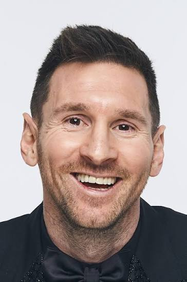

О футболисте:

Лионель Андрес Месси (род.24 июня в 1987 году в Росарио,Аргентина)-аргентинский футболист, нападающийи капитан клуба MLS "Интер Майами",признаный одним из величайщих игроков в истории футбола." Месси начал заниматься футболом в возрасте пяти лет,в детском клубе "Грандоли",где занимался его старший брат. 15 февраля 2002 года с согласия ФИФА Месси наконец был зарегистрирован в Королевской испанской футбольнрой федерации,таким образом были сняты все ограничения на его участие в матчах. В свои 39 лет Месси выступает на позиции правого или оттянутого наподающего под 10-м номером. Несмотря на невысокий рост 170 см он обладает феноменальным дриблингом,низким центром тяжести,видением поля и точнейшим ударом с левой ноги. В возрасте 13 лет вместе с родителями переехал в Испанию, чтобы присоединиться к молодёжной команде «Барселоны», в октябре 2004 года дебютировал за основной состав этого клуба. Месси - самый титулованный футболист в истории и единственный восьмикратный обладатель "Золотого мяча". На его счету свыше 930 голов и 420 голевых передач за профессиональную карьеру.
Интересные факты
- Родители назвали его в честь известного американского музыканта Л.Ричи
- Со своей будущей женой А.Рокуццо он познакомился в родном городе,когда им было по пять лет.
- Самый титулованный футболист:Месси удерживает мировой рекорд по количеству выигранных трофеев.
- Предки Месси по отцовской линии эмигрировали в Аргентину из Итальянского города.
Клуббы Месси
| Клуб | Годы | Страна |
|---|---|---|
| ФК "Барселона" | 2004-2021 | Испания |
| "Пари Сен-Жермен" | 2021-2023 | Франция |
| "Интер Майами" | 2023-по настоящее время | США |
Достижения Месси
- 8 "Золотых мячей" - абсолютный мировой рекорд
- 6 "Золотых бутс"
- 4 "Награды лучшему игроку мира по версии ФИФА"
- 2 "Золотых мяча" чемпионата мира 2014 и 2022
- 2 "Награды MVP MLS" (2024,2025)
- Лучший бомбардир в истории чемпионатов мира.
- Наибольшее количество голевых передач в истории футбола.
- Рекорд по голам за календарный год:91 гол в 69 матчах.
- Лучший бомбардир в истории "Барселоны" (672 гола),чемпионата Испании (474 гола) и сборной Аргентины (126 голов)